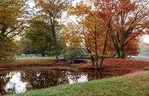
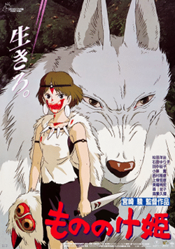
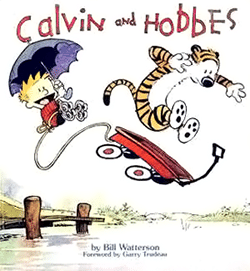

Hello Internet!
My name is Diego Branciforte. I am 17 years old and currently attending Cox Mill High School for my senior year.

Biography
I was born and raised in San Diego, California until the fourth grade. Both my parents were enlisted in the Navy before my birth, after which my mom left to care for me full time. Sometime during elementary school I picked up Irish step-dacing and won several awards in competitions. Before starting middle school my dad recieved orders to be stationed at Jamestown, Rhode Island. My life in middle school was for the most part uninteresting. By this point a majority of my time was spent either dancing or on a computer. I managed to compete at several national and state competitions for dancing, and even qualified for the world championships before my interest completely faded. In the middle of the eighth grade my dad finally retired from the military after serving twenty years. For some reason he decided to move to Charlotte, North Carolina so my sister and I could finish school.
My interests lie within the realm of computers and the internet, along with their various applications. Since the age of five I've had my own personal computer with little restrictions on what I can do (though most of my computer time was spent on online games). When it was time to start preparing for high school my dad asked me if I would like to apply for Cox Mill's Academy of Information Technology, to which I quickly replied with "defintely". Throughout my high school career I've completed several AoIT courses and attained their corresponding certifications, namely Python and Adobe Photoshop. For my final year I'm learning Java and hope to get certified in Adobe Dreamweaver and Adobe Animate before graduating.
Favorite Quote
"Now I am become Death, the destroyer of worlds" - Robert Oppenheimer
Favorite Foods
- Mac n' cheese
- Hamburger
- Steak
- Pizza
- Ramen
Favorite Places I've Visited
- Mesocco, Switzerland
- Milan, Italy
- Munich, Germany
- Montreal, Canada
- Nice, France
Countries I'd Like to Visit
- Switzerland (again)
- Hike the swiss alps
- Visit swiss villages
- Meet beautiful swiss women
- Norway
- Go skiing in the mountains
- Visit Oslo
- Meet beautiful norwegian woman
- Japan
- Eat japanese food
- Visit uncle
- Meet beautiful japanese woman
| Favorite Animal | Penguin | |
|---|---|---|
| Favorite Season | Autumn |  |
| Favorite Movie | Princess Mononoke |  |
| Favorite Comic | Calvin and Hobbes |  |
| Favorite Video Game | Dark Souls III | |
| Favorite Painter | Thomas Cole |
{kind=link}
{kind=link}
{kind=link}
{kind=link}
{kind=link}
{kind=link}
Contact Information
Email: dbranciforte5779@cabarrus.k12.nc.us
Phone: 777-777-7777